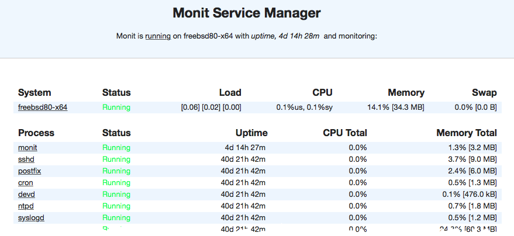
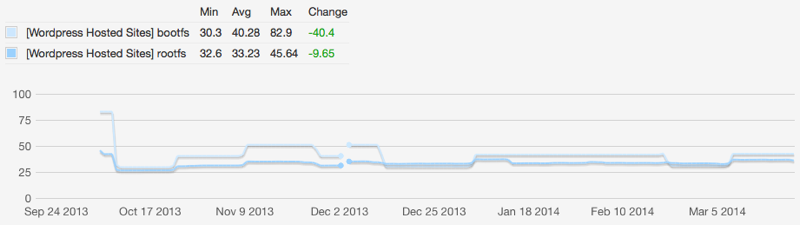
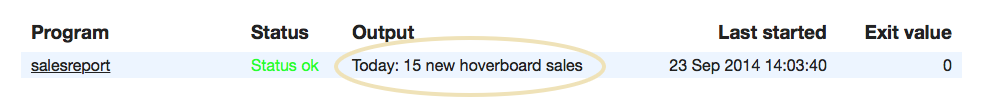
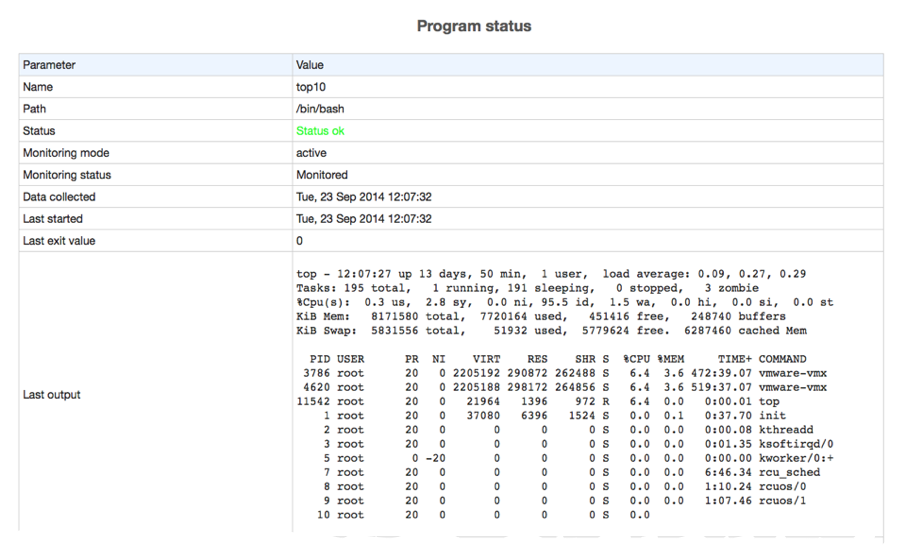
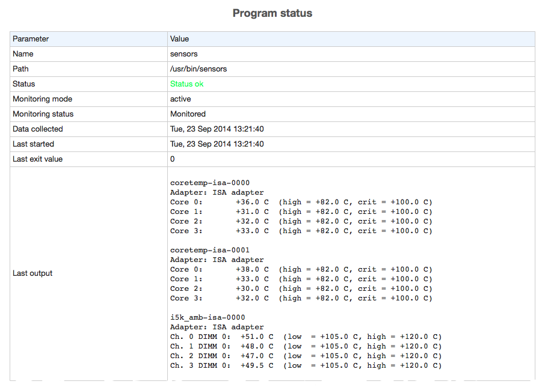

Up and running in 15 minutes!
With all features needed for system monitoring and error recovery. It's like having a watchdog with a toolbox on your server
A birds-eye view of Monit
Use your keyboard arrows to navigate or swipe on mobile
Some examples in this presentation might only work with a recent version of Monit. Please download Monit below or use your
package manager to install the latest version.
What to monitor?

How to monitor?
Monit is controlled via an easy to configure control file with a simple syntax. The file is called monitrc and
resides in your home directory.
An example monitrc file is included with the Monit download. Open it in your favourite editor and follow along..
Starting and stopping
Start Monit from the command line:
$
monit
Monit will detach from the terminal and run as a daemon process (background process). As
a daemon, Monit runs in cycles; It monitors services, then goes to sleep for a configured period,
wakes up and start monitoring again in an endless loop until you choose to stop monit by this
command:
$
monit quit
User Interface
In addition to the command line interface, Monit also provides a super lightweight Web-Interface you can use to check the status of
all monitored services

Is your website up?
(1) check host mmonit.com with address mmonit.com
(3) if failed port 80 protocol http then alert
(4) if failed port 443 protocol https then alert
- Connects to and test the host mmonit.com
- Test using the HTTP protocol, if this fails, raise an alert
- Do the same test using HTTPS
You can add as many host checks as you need. Basically you can create your own pingdom and if you
use M/Monit you will also get the ping and response-time charts.
Check a section on your site
check host mmonit.com with address mmonit.com
if failed
port 80 protocol http
and status = 200
and request /monit/ with content = "Monit [0-9.]+"
then alert
Same as before, connect to mmonit.com on the HTTP port, but this time we check the HTTP status code returned
by the server and request a specific page, /monit/ and test if a text string is present in the page. Note that you can use regular
expression in the test. If any of the above checks fails, we raise an alert
..and your mail server?
check host smtp.example.com with address smtp.example.com
if failed port 25 with protocol smtp then alert
See the pattern? A simple check against a host address on the service port and then the protocol to test.
Here's another example where we check a MySQL server on localhost. In this case we also
ping the host first to check that it is up
check host localhost with address 127.0.0.1
if failed ping then alert
if failed port 3306 protocol mysql then alert
Protocols
Monit supports many of the most popular protocols on the internet today, such as HTTP, SMTP, FTP, LDAP,
NTP, SSH, SIP, IMAP, POP, DNS etc. Testing a server at the protocol level is important to determine if the server is working properly. Monit also provides a general send/expect test for sending bytes to the
server and testing the response. Here, for instance, we use send/expect to test a mail server:
if failed port 25 and
expect "^220.*"
send "HELO localhost.localdomain\r\n"
expect "^250.*"
send "QUIT\r\n"
then alert
Check SSL certificate
check host mmonit.com with address mmonit.com
if failed
port 443
with protocol https
and certificate valid > 30 days
use ssl options {verify: enable}
then alert
I almost always forget to renew our SSL certificate, although I use the calendar to remind me. With
the above test, Monit will remind me if the certificate at mmonit.com will expire within the next 30 days and continue to remind me with
a red color in the UI. For good measure I also verify the SSL certificate so I know I'm testing the mmonit.com server
If your web-site is down, getting an alert is all well and good, but it is much more useful if you can also have it
automatically fixed, especially at 04 AM. Monit can do that.
Checking a Process
For this example, let us assume that your web-server is Apache, if not, no worries, the same applies to any process. Here is how we can check if Apache is running
check process apache with pidfile /var/run/httpd.pid
That's all, Monit will check the process id (pid) in the given pid file and consult the system's process table and check if the process exist. If not, Monit will raise an alert. Next, we'll see how Monit can be configured to automatically start or restart Apache if it is not running.
Automatically start a Process
check process apache with pidfile /var/run/httpd.pid
start program = "/etc/init.d/apache2 start"
stop program = "/etc/init.d/apache2 stop"
Tell Monit which program it should use to start the process if it is not running. We also add a stop
program in case we would like to use Monit to stop the Apache process. What is useful here is that these programs
already exist on your system as init, upstart or systemd scripts and you do not have
to write them yourself.
Now, if the Apache process should stop for some reason, Monit will
call the start program to automatically start Apache again.
Restart a Process
If you call help desk, the first thing they will tell you, is to restart your machine. It sounds silly,
but more often than not, it works. Monit can do the same and try to restart a process if it does not work as expected. Here we add a
restart program and we use this to restart Apache if it runs, but for some reasons Apache has stopped accepting new connections or no longer speaks HTTP
check process apache with pidfile /var/run/httpd.pid
restart program = "/etc/init.d/apache2 restart"
if failed port 80 protocol http then restart
If we already have start and stop defined, we can call restart without having to add a restart program. Monit will then call stop and then start. Although a dedicated restart program is often desired as it might be a different operation
Avoid false positives
Before we restart a process, we might want to be certain that it has a problem and not just a
fluke. This can be done by telling Monit that the problem must exist over multiple checks before a restart is performed.
if failed port 80 protocol http for 2 cycles then restart
Remember that Monit runs in check-sleep cycles. In the above example we tell Monit that the connection or
protocol test has to fail at least 2 consecutive times before the process is restarted
Checked Resource Usage
You can check resources used by a process and perform actions if values goes outside specific bounds
check process apache with pidfile /var/run/httpd.pid
<...>
if cpu > 95% for 2 cycles then alert
if total cpu > 99% for 5 cycles then restart
if memory > 50 MB then alert
if total memory > 500 MB then restart
In the above example we check the following resources, cpu, memory, total cpu (this, plus child processes cpu usage) and total memory (the
combined memory used by this and child processes). See the manual for even more resources that can be checked.
Managing Services
Having start, stop and restart programs defined for a service is convenient if Monit is used from the command line. For instance to
shutdown a set of services graceful at once we can use
$ monit -g www stop
The above command line will call the stop program of all services belonging to the group www, which is quite useful for system administration. You can of course do the same to start or restart a single service or a group
of services.
Avoid alert spam
Monit, like any monitoring system really, can be noisy and send a lot of email alerts. This can be very
annoying, but luckily you can take steps to prevent this. Your primary tool for tuning Monit is the for n cycles
statement
if total memory > 500 MB for 3 cycles then alert
Use this statement with if-tests that produces too many alerts. How many cycles you should wait, if any, depends
on the importance and stability of the service and how long a cycle is
Files, Directories and Disks
Monitoring Files
To keep with the Apache example. Let's say we want to test and perform a
log rotate if Apache's access.log becomes too large
check file access.log with path /var/log/apache2/access_log
if size > 250 MB then exec "/usr/sbin/logrotate -f apache"
Normally you will run the logrotate program once per day from crond, but if the log file suddenly should grow very large, Monit can perform an
“emergency” rotate.
Checked File Changes
For security reasons you may want to monitor files for changes and get a notification if a file was tampered with (i.e. changed). The
way to do this is to use the check file statement and utilize a checksum test. You can also test other attributes, such as file owner and
file access permissions
check file apache with path /usr/sbin/httpd
if failed checksum then alert
if failed uid root then alert
if failed gid root then alert
if failed permission 755 then alert
Here we test the apache binary. The checksum test in line 2 will raise an alert if the binary was changed
Monitoring directories
Directories can be monitored for changes. In this example we use timestamp to alert if content was added or removed
check directory certificates with path /etc/ssl/certs/
if changed timestamp then alert
You can also turn the table and monitor a directory that should change
check directory incomming with path /var/data/ftp
if timestamp > 1 hour then alert
If your server spool incomming data on a regular basis, an alert can be raised if no new data has arrived in the last hour
Monitoring Filesystems
Monitor a hard disk or a filesystem and raise alerts if the device is about to run out of available space
check filesystem disk2 with path /dev/disk2
if space usage > 95% then alert
Using M/Monit you can then also view charts of your disks and predict when it is time to invest in
more space

Check Network Interfaces
Monitor your network interfaces to be the first to know what is going in and out. Get an alert if the interface is down, or if the capacity
changes. Monitor saturation, current upload and download bandwidth usage and total data transfers within the last 24 hours.
check network eth0 with interface eth0
if failed link then alert
if changed link then alert
The above will check if the network interface is up and if the link capacity is stable (for example if the mode unexpectedly drops from
1Gb/s to 10Mb/s, you will know).
Network Problems?
In case of a problem you can add a start and stop program to automatically restart the interface which might help. (Substitute with the relevant network commands for your system)
check network eth0 with address 10.0.1.3
start program = '/sbin/ifup eth0'
stop program = '/sbin/ifdown eth0'
if failed link then restart
If the interface should fail, Monit will now automatically attempt restart and alert you. By adding a start and a stop program you can also restart the network interface from the Monit GUI.
Network Usage
Check network utilization, bandwidth usage, current transfer rate and total data transferred within the last 24 hours.
check network en0 with address "fe80::aa20:66ff:fe50:4f6%en0"
if failed link then alert
if changed link then alert
if saturation > 80% then alert
if total upload > 10 GB in last hour then exec "/usr/local/bin/script.sh"
Monit maintains a rolling count of total uploaded and downloaded bytes for the last 24 hours. In the above example we also show that instead of just sending an alert, you can execute a script if you choose. If you use M/Monit together with Monit, you can view time-serie charts of your network which can be very useful
Check Programs
Monit can execute a program and perform an action if the exit value indicates an error. This means that you can use Monit to perform
basically any type of check you can write a script for. For instance, lets say you have a script that connects to MySQL and runs a
query. If everything is okay, the script exit with 0 otherwise with 1
check program salesreport with path /var/monit/programs/sales.sh
every "* 8 * * 1-5"
if status != 0 then alert
This will run the sales report check every weekday between 8AM and 9AM. Please see the manual for more information
Output from check program
The output from your check program script is displayed in the Monit UI. In the dashboard, only the first line is displayed.

In the service details page, up to 1kB is displayed and if output goes over several lines, a mono-spaced font is used to retain
formating. Here for example, we display the output of running top and sensors (press right-arrow).

